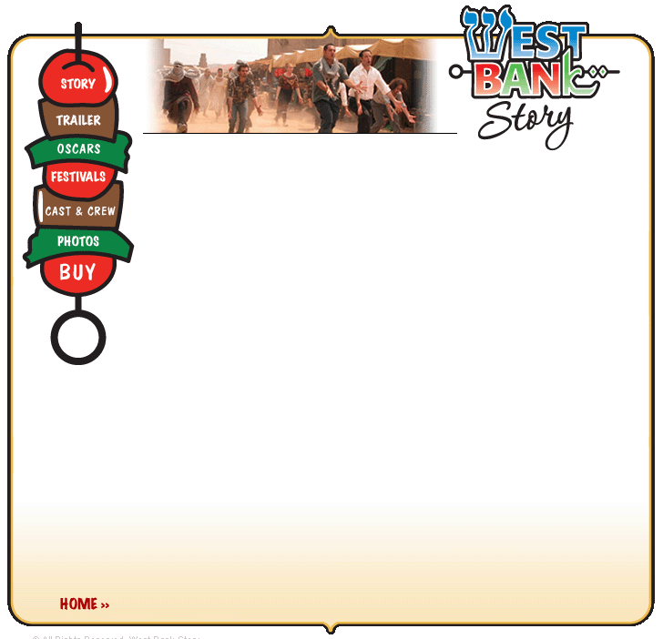
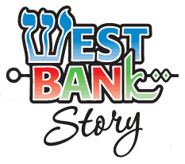

| Total Festivals: | 112 |
| Festivals Won: | 25 |
| Total Number of Countries Screened In: | 21, including: USA, Canada, China, Australia, Brazil, Argentina, UK, Spain, Sweden, Belgium, Switzerland, Italy, Germany, Austria, Israel, United Arab Emirates, Croatia, India, Poland, Denmark, Russia |
| Total Number of U.S. States Screened in (including Washington D.C.): | 29, including: California, Arizona, Utah, Oregon, Texas, Louisiana, Mississippi, Georgia, North Carolina, Florida, Alabama, Tennessee, Colorado, Michigan, Illinois, Missouri, Indiana, New York, Massachusetts, Connecticut, Rhode Island, New Jersey, Pennsylvania, Maryland, West Virginia, Virginia, Nevada, Ohio |
| Premiere Industry Festivals: |
Sundance Film Festival HBO/US Comedy Arts Film Festival - Aspen, Colorado |
| Winner: |
Malibu Film Festival, Winner "Special Jury Prize Best Live Action Short" Santa Cruz Film Festival, Winner "Best Comedy" USA Film Festival, Winner "Best Student Film" Indianapolis Film Festival, Winner "Best Short" Starz 1st Look Student Film Festival, Winner "Best Narrative" Antelope Valley Film Festival, "Best of Fest" Boston Film Festival, Winner "Indie Soul Best Picture Award" Cinema Jove Int. Film Festival (Spain), Winner "International Canal+ Award" Boulder International Film Fest, Winner "Best Short Film" Tiburon International Short Film Fest, Winner "Best Musical Short" Stony Brook Film Festival, Winner "Best of Festival" Badalona Film Festival, Winner "Best Short Film" St. Louis Film Festival, Winner "Best Short Film" Method Fest, Special Mention San Diego Jewish Film Festival, Winner "Audience Choice Award" Ashland Independent Film Festival, Winner "Best Short Film" Lucerne Film Festival (Switzerland), Winner "Silver Leopard" Detroit Jewish Film Festival, Winner "Contribution to Jewish Culture Award" Temecula Valley Intl Film Festival, Winner "Audience Award" Cinema Tout Ecran - Geneva, Switzerland, Winner “Best Short Film” Int Short Film Fest Winterthur – Switzerland, Winner “Audience Choice Award” 9th Shortfilmnight of Lausanne – Switzerland, Winner “Audience Award” International Jewish Film Festival in Argentina, Winner “First Prize" Nashville Jewish Film Festival, Winner Intl Student Film Fest of Beijing Film Academy – China, Winner “Audience Choice Award” |
| Selections, U.S. Festivals: | Click here. |
| Selections, International: | Click here. |
© West Bank Story - Maintained by Two Beasts